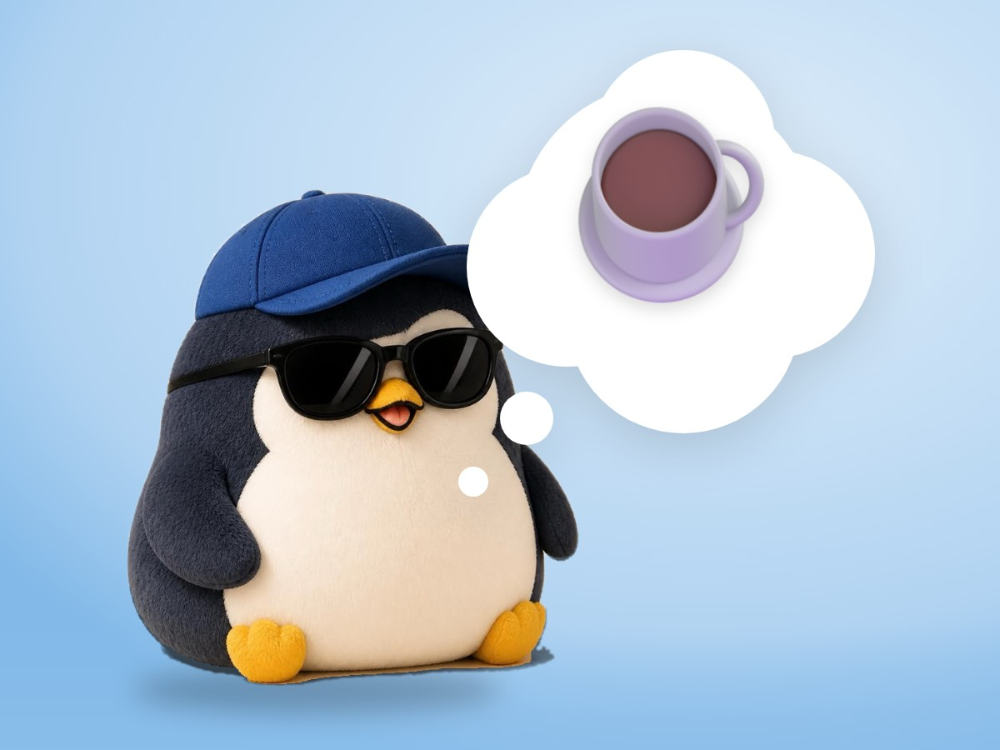

🐧 EVERYDAY LIFE⚡ 19 SEC
If you leave one cup out, your room gets messier and messier ☕

Broken Windows
There is a "broken windows theory": if you leave a broken window, the town gets worse and worse.
One Cup
A room is the same: if 1 cup is left out, more and more things pile up.
⚡ TRY IT
One week at my desk
Tap things on the desk to put them away.
📅 Ready📅 Monday📅 Tuesday📅 Wednesday📅 Thursday📅 Friday📅 Saturday📅 Sunday
🧹 Taps to clean: 0
A cup will appear on Monday. Will you put it away?
⏳ Days are passing… tap the mess!
✨ Only 1 tap, and the desk was clean all week!
😮💨 Clean again… but it took many taps.
🌪️ The mess grew and grew. It started with 1 cup!
Just One
"Just 1 is OK" is where the mess begins.
Right Away
If you put away the first 1 right away, the room stays clean.
📚 I learned this from the Japanese blog "Panda no Ondo".
PREVIOUS POST
Keeping things you do not use is the real loss